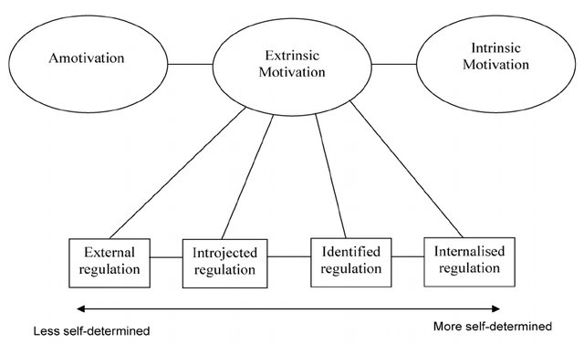

PART 1
Last edited: January 6, 2021
On this page we will go through a quick example of LPA, to explore motivational profiles. Later on, we will try to improve the model see Conclusion
1. Data
Let’s load in the data, and unlabel it. Make sure that the data is in the directory specified.
library(sjlabelled)
load("data_abs_public_v2.RData")
data_abs_public <- unlabel(data_abs_public, verbose=F)
The dataset contains a Dutch version of the Sport Motivation Scale (SMS). The stem “Why do you practice running?” was followed by different phrases tied to motivational regulations that lie on the self-determination continuum.
The self-determination continuum

The SMS contains 24 items (measured in each wave), aimed at measuring the respective motivational regulations, with 7-point Likert scales ranging from “does not correspond at all” to “corresponds exactly”.
For now, we will subset the SMS data from wave 1.
# Install packages
library(dplyr)
# Subset SMS data
sms <- data_abs_public %>% select(W1_M1_1, W1_M1_2, W1_M1_3, W1_M1_4, W1_M1_5, W1_M1_6, W1_M1_7, W1_M1_8, W1_M2_1, W1_M2_2, W1_M2_3, W1_M2_4, W1_M2_5, W1_M2_6, W1_M2_7, W1_M2_8, W1_M3_1, W1_M3_2, W1_M3_3, W1_M3_4, W1_M3_5, W1_M3_6, W1_M3_7, W1_M3_8)
# And add identifier
sms$id <- 1:length(sms[, 1])
We use the careless-package to identify “string responding”, and we look for multivariate outliers with Mahalanobis Distance (see here).
# Install packages
library(tidyverse)
library(careless)
library(psych)
# Make string variable
sms <- sms %>%
mutate(string = longstring(.)) %>%
mutate(md = outlier(., plot = FALSE))
Let’s cap string responding to a maximum of 10 and use a MD cutoff of alpha .001.
cutoff <- (qchisq(p = 1 - .001, df = ncol(sms)))
sms_clean <- sms %>%
filter(string <= 10,
md < cutoff) %>%
select(-string, -md)
We would be better of performing confirmatory factor analysis (CFA) subsequent to our LPA. In doing so, we would obtain factor-scores for each subscale of SDT’s theorized continuum, providing subscale estimates that consider the contribution of each item to the latent variable they are measuring. However, in an exploratory attempt, we will start by calculating motivational subscale scores by taking the mean of the items aimed at measuring the respective regulations.
# Create subscales for LPA input
sms_clean$amotivation <- rowMeans(cbind(sms_clean$W1_M1_5, sms_clean$W1_M2_4, sms_clean$W1_M3_1, sms_clean$W1_M3_6), na.rm = TRUE)
sms_clean$external <- rowMeans(cbind(sms_clean$W1_M1_4, sms_clean$W1_M2_3, sms_clean$W1_M3_3, sms_clean$W1_M3_8), na.rm = TRUE)
sms_clean$introjected <- rowMeans(cbind(sms_clean$W1_M1_7, sms_clean$W1_M2_2, sms_clean$W1_M2_8, sms_clean$W1_M3_7), na.rm = TRUE)
sms_clean$identified <- rowMeans(cbind(sms_clean$W1_M1_3, sms_clean$W1_M1_8, sms_clean$W1_M2_7, sms_clean$W1_M3_4), na.rm = TRUE)
sms_clean$integrated <- rowMeans(cbind(sms_clean$W1_M1_2, sms_clean$W1_M2_1, sms_clean$W1_M2_5, sms_clean$W1_M3_5), na.rm = TRUE)
sms_clean$intrinsic <- rowMeans(cbind(sms_clean$W1_M1_1, sms_clean$W1_M1_6, sms_clean$W1_M2_6, sms_clean$W1_M3_2), na.rm = TRUE)
2. Descriptives
First, let’s describe the different motivational regulations.
# install packages
library(dplyr)
library(tidyr)
library(knitr)
library(kableExtra)
# First, subset the items we need to describe (and for subsequent LPA)
clus <- sms_clean[, 25:31]
input <- clus %>%
select(-id) %>%
gather("Variable", "value") %>%
group_by(Variable) %>%
summarise(Mean=mean(value, na.rm=TRUE),
SD=sd(value, na.rm=TRUE),
min=min(value, na.rm=TRUE),
max=max(value, na.rm=TRUE))
knitr::kable(input, digits=2, "html", caption="Descriptives of SMS W1") %>%
kableExtra::kable_styling(bootstrap_options = c("striped", "hover"))
Descriptives of SMS W1
|
Variable
|
Mean
|
SD
|
min
|
max
|
|
amotivation
|
1.26
|
0.54
|
1.00
|
5
|
|
external
|
2.11
|
1.08
|
1.00
|
7
|
|
identified
|
3.21
|
1.19
|
1.00
|
7
|
|
integrated
|
4.18
|
1.36
|
1.00
|
7
|
|
intrinsic
|
3.63
|
1.39
|
1.00
|
7
|
|
introjected
|
4.85
|
1.32
|
1.25
|
7
|
3. Mclust
The Mclust-package performs LPA and is very intuitive. It requires complete data, without NAs. In this example, we will apply listwise deletion on remaining missings (we allowed for some missingness on each subscale); however, we would be better of imputing missing values. Moreover, the input variables for the LPA will be standardized, for reasons of interpretability.
library(mclust) # install package
# Complete cases only
clus.nm <- clus %>%
na.omit() %>% # listwise deletion
mutate_all(list(scale)) # standardize indicators
Model fit
We will start off by exploring the model fit by plotting Bayesian Information Criteria (BIC) for models with the number of profiles increasing incrementally (i.e. from 1 to 9). We also check values of the Integrated Completed Likelihood (ICL) criterion (see this paper). The ICL differs from the BIC in that it adds a penalty on solutions with greater entropy or classification uncertainty. We can also perform the Bootstrap Likelihood Ratio Test (BLRT), which looks if the model fit increases for every increase in the number of profiles. For reasons of time (takes a long time to run, and I can already give away that the results are similar to BIC and ICL), we will skip this test (I will give the code).
Other statistics that can be investigated are the log-likelihood and sample-adjusted BIC (SSA-BIC). Lower values indicate better model fit. See this paper.
BIC
BIC <- mclustBIC(clus.nm %>%
select(-id)) # exclude id
plot(BIC)
ICL
ICL <- mclustICL(clus.nm %>%
select(-id))
plot(ICL)
BLRT
mclustBootstrapLRT(clus.nm %>%
select(-id), modelName = "VEV")
From the plot it does not immediately become clear which model yields the best fit to the data (given the large y-axis and the model scores being so close together). We use the summary-function to show the top-three models based on BIC and ICL.
BIC
summary(BIC)
## Best BIC values:
## VEV,9 EEV,8 EEV,9
## BIC -8460.494 -8792.1281 -8871.0369
## BIC diff 0.000 -331.6344 -410.5431
ICL
summary(ICL)
## Best ICL values:
## VEV,9 EEV,8 EEV,9
## ICL -8601.487 -8974.6124 -9081.2694
## ICL diff 0.000 -373.1252 -479.7821
Statistically, the best model is the VEV, 9, indicating that there are 9 profiles with variable volume, equal shape, and variable orientation (see this paper for the different models and their geometric characteristics).
To inspect the model more closely, save it as an object and use the summary-function.
m1 <- Mclust(clus.nm %>%
select(-id), modelNames="VEV", G=9, x=BIC)
summary(m1)
## ----------------------------------------------------
## Gaussian finite mixture model fitted by EM algorithm
## ----------------------------------------------------
##
## Mclust VEV (ellipsoidal, equal shape) model with 9 components:
##
## log-likelihood n df BIC ICL
## -3545.957 656 211 -8460.494 -8601.487
##
## Clustering table:
## 1 2 3 4 5 6 7 8 9
## 136 37 66 39 113 86 69 39 71
4. Visualizing LPA
Now that our model is statistically substantiated, let’s plot the results, to make the solution more intuitive. If the solution is theoretically meaningfull, we should be able to interpret the different profiles guided by self-determination theory.
We will use the reshape2-package to extract the subscale-means for each profile. Note that we transformed the SMS-data into standardized z-scores, meaning that profile means reflect standard deviation (SD) units above or below the sample mean (which is set to 0).
library(reshape2)
means <- data.frame(m1$parameters$mean,
stringsAsFactors = F) %>%
rownames_to_column() %>%
rename(Motivation = rowname) %>%
melt(id.vars = "Motivation", variable.name = "Profile", value.name = "Mean") %>%
mutate(Mean = round(Mean, 2))
means %>%
ggplot(aes(Motivation, Mean, group = Profile, color = Profile)) +
geom_line() +
geom_point() +
scale_x_discrete(limits = c("amotivation", "external", "introjected", "identified", "integrated", "intrinsic")) +
labs(x = NULL, y = "Standardized mean SMS scores") +
theme_bw(base_size = 14) +
geom_hline(yintercept = 0, linetype="dashed") +
theme(axis.text.x = element_text(angle = 45, hjust = 1), legend.position = "top")
We see a profile that scores relatively low on all forms (except on amotivation), a profile scoring relatively high, and some profiles with above-average amotivation, but further it seems to be an arbitrary division in the middle, with profiles differing only quantitatively from one another. This demonstrates that theoretical interpretation ought to be kept in mind when making statistical inferences about the most meaningful model.
So, now let’s build the model up incrementally, starting with 2 clusters, VEV-model, and increasing it untill the extra profile does not provide a theoretical addition. The code below can be used to build the model, sequentially via a series of models with an increasing number of profiles.
m2 <- Mclust(clus.nm %>%
select(-id),
modelNames = "VEV", G = 2, x = BIC) # choose the desired number of profiles (i.e. 2:9)
summary(m2) # provide a summary
means <- data.frame(m2$parameters$mean,
stringsAsFactors = F) %>% # extract means
rownames_to_column() %>%
rename(Motivation = rowname) %>%
melt(id.vars = "Motivation", variable.name = "Profile", value.name = "Mean") %>%
mutate(Mean = round(Mean, 2))
means %>%
ggplot(aes(Motivation, Mean, group = Profile, color = Profile)) +
geom_line() +
geom_point() +
scale_x_discrete(limits = c("amotivation", "external", "introjected", "identified", "integrated", "intrinsic")) +
labs(x = NULL, y = "Standardized mean SMS scores") +
theme_bw(base_size = 14) +
geom_hline(yintercept = 0, linetype="dashed") +
theme(axis.text.x = element_text(angle = 45, hjust = 1), legend.position = "top")
2 profiles
m2 <- Mclust(clus.nm %>%
select(-id),
modelNames = "VEV", G = 2, x = BIC)
summary(m2)
## ----------------------------------------------------
## Gaussian finite mixture model fitted by EM algorithm
## ----------------------------------------------------
##
## Mclust VEV (ellipsoidal, equal shape) model with 2 components:
##
## log-likelihood n df BIC ICL
## -4441.881 656 50 -9208.07 -9279.598
##
## Clustering table:
## 1 2
## 202 454
means <- data.frame(m2$parameters$mean,
stringsAsFactors = F) %>%
rownames_to_column() %>%
rename(Motivation = rowname) %>%
melt(id.vars = "Motivation", variable.name = "Profile", value.name = "Mean") %>%
mutate(Mean = round(Mean, 2))
means %>%
ggplot(aes(Motivation, Mean, group = Profile, color = Profile)) +
geom_line() +
geom_point() +
scale_x_discrete(limits = c("amotivation", "external", "introjected", "identified", "integrated", "intrinsic")) +
labs(x = NULL, y = "Standardized mean SMS scores") +
theme_bw(base_size = 14) +
geom_hline(yintercept = 0, linetype="dashed") +
theme(axis.text.x = element_text(angle = 45, hjust = 1), legend.position = "top")
3 profiles
m3 <- Mclust(clus.nm %>%
select(-id),
modelNames = "VEV", G = 3, x = BIC)
summary(m3)
## ----------------------------------------------------
## Gaussian finite mixture model fitted by EM algorithm
## ----------------------------------------------------
##
## Mclust VEV (ellipsoidal, equal shape) model with 3 components:
##
## log-likelihood n df BIC ICL
## -4281.76 656 73 -9037.01 -9171.984
##
## Clustering table:
## 1 2 3
## 151 284 221
means <- data.frame(m3$parameters$mean,
stringsAsFactors = F) %>%
rownames_to_column() %>%
rename(Motivation = rowname) %>%
melt(id.vars = "Motivation", variable.name = "Profile", value.name = "Mean") %>%
mutate(Mean = round(Mean, 2))
means %>%
ggplot(aes(Motivation, Mean, group = Profile, color = Profile)) +
geom_line() +
geom_point() +
scale_x_discrete(limits = c("amotivation", "external", "introjected", "identified", "integrated", "intrinsic")) +
labs(x = NULL, y = "Standardized mean SMS scores") +
theme_bw(base_size = 14) +
geom_hline(yintercept = 0, linetype="dashed") +
theme(axis.text.x = element_text(angle = 45, hjust = 1), legend.position = "top")
4 profiles
m4 <- Mclust(clus.nm %>%
select(-id),
modelNames = "VEV", G = 4, x = BIC)
summary(m4)
## ----------------------------------------------------
## Gaussian finite mixture model fitted by EM algorithm
## ----------------------------------------------------
##
## Mclust VEV (ellipsoidal, equal shape) model with 4 components:
##
## log-likelihood n df BIC ICL
## -4170.988 656 96 -8964.647 -9133.719
##
## Clustering table:
## 1 2 3 4
## 261 207 93 95
means <- data.frame(m4$parameters$mean,
stringsAsFactors = F) %>%
rownames_to_column() %>%
rename(Motivation = rowname) %>%
melt(id.vars = "Motivation", variable.name = "Profile", value.name = "Mean") %>%
mutate(Mean = round(Mean, 2))
means %>%
ggplot(aes(Motivation, Mean, group = Profile, color = Profile)) +
geom_line() +
geom_point() +
scale_x_discrete(limits = c("amotivation", "external", "introjected", "identified", "integrated", "intrinsic")) +
labs(x = NULL, y = "Standardized mean SMS scores") +
theme_bw(base_size = 14) +
geom_hline(yintercept = 0, linetype="dashed") +
theme(axis.text.x = element_text(angle = 45, hjust = 1), legend.position = "top")
5 profiles
m5 <- Mclust(clus.nm %>%
select(-id),
modelNames = "VEV", G = 5, x = BIC)
summary(m5)
## ----------------------------------------------------
## Gaussian finite mixture model fitted by EM algorithm
## ----------------------------------------------------
##
## Mclust VEV (ellipsoidal, equal shape) model with 5 components:
##
## log-likelihood n df BIC ICL
## -4116.972 656 119 -9005.797 -9168.907
##
## Clustering table:
## 1 2 3 4 5
## 119 115 116 208 98
means <- data.frame(m5$parameters$mean,
stringsAsFactors = F) %>%
rownames_to_column() %>%
rename(Motivation = rowname) %>%
melt(id.vars = "Motivation", variable.name = "Profile", value.name = "Mean") %>%
mutate(Mean = round(Mean, 2))
means %>%
ggplot(aes(Motivation, Mean, group = Profile, color = Profile)) +
geom_line() +
geom_point() +
scale_x_discrete(limits = c("amotivation", "external", "introjected", "identified", "integrated", "intrinsic")) +
labs(x = NULL, y = "Standardized mean SMS scores") +
theme_bw(base_size = 14) +
geom_hline(yintercept = 0, linetype="dashed") +
theme(axis.text.x = element_text(angle = 45, hjust = 1), legend.position = "top")
The three-class solution provided theoretically interpretable motivational profiles of athletes, as can be seen in the plot down below. Adding the fourth (and fifth) profile did not provide a theoretical addition.
We can identify the following motivational profiles!
- an amotivated profile (N= 151), with athletes displaying very high levels of amotivation, slightly above average levels of controlled motivation, and about average scores on autonomous motivation
- a moderately motivated profile (N = 284), with athletes expressing moderate to low levels of both controlled and autonomous motivation, and low amotivation
- a highly motivated profile (N = 221), with athletes displaying high levels of autonomous motivation and moderate to high levels of controlled motivation but low amotivation.
I am not aware of any agreed upon criteria of what constitutes low or high values, but here i define larger than ± 1 SD as very low/high, ± 0.5 to 1.0 SD as low/ high, and values from −0.5 to 0.5 SD as slightly below/above average (cf. Gustafsson et al. 2018).
Before we move on to specifying our model differently, let’s make this plot neater and more informative (for fun), by plugging in profile names, trimming values exceeding +1 SD, and using a color blind friendly palette. We save the plot in object p.
# Trimming values exceeding +1 SD
means <- data.frame(m3$parameters$mean,
stringsAsFactors = F) %>%
rownames_to_column() %>%
rename(Motivation = rowname) %>%
melt(id.vars = "Motivation", variable.name = "Profile", value.name = "Mean") %>%
mutate(Mean = round(Mean, 2),
Mean = ifelse(Mean > 1, 1, Mean))
# Change labels
means$Profile <- plyr::revalue(means$Profile,
c("X1"="Moderately motivated", "X2" = "Amotivated", "X3" = "Highly motivated"))
means$Motivation <- plyr::revalue(means$Motivation, c("amotivation" = "Amotivation", "external" = "External", "introjected" = "Introjected", "identified" = "Identified", "integrated" = "Integrated","intrinsic" = "Intrinsic"))
# Change order
means$Profile <- factor(means$Profile, # Relevel group factor
levels = c("Amotivated", "Moderately motivated", "Highly motivated" ))
p <- means %>%
ggplot(aes(Motivation, Mean, group = Profile, color = Profile)) +
geom_point(size = 5) +
geom_line(size = 2.5) +
scale_x_discrete(limits = c("Amotivation", "External", "Introjected", "Identified", "Integrated", "Intrinsic")) +
labs(x = NULL, y = "Standardized mean SMS scores") +
scale_colour_manual(values=c("#56B4E9", "#000000", "#E69F00")) + theme_bw(base_family="serif", base_size = 16) + geom_hline(yintercept = 0, linetype="dashed") + theme(axis.text.x = element_text(family="serif", angle = 45, hjust = 1), legend.position = "right", legend.title=element_blank())
#png((paste("images", "/", "lpa.png", sep = ""))) # save the plot as .png
And let’s turn this static plot into an interactive one. Here, it is not really necessary, but in a LPA with more indiciators it may be tough to read the values of each indicator. We will use the plotly-package.
library(plotly)
ggplotly(p, tooltip = c("Motivation", "Mean")) %>%
layout(legend = list(orientation = "h", y = 1.2))
5. Probabilities
Now that we have visualized our profiles, let’s check the class membership probabilities (posterior probabilities) of our solution.
prob <- as.data.frame(m3$z) # turn probabilities into dataframe
prob$class <- m3$classification # get assigned profiles
prob_mod <- prob %>% # calculate average posterior probabilities
filter(class ==1)
prob_am <- prob %>%
filter(class ==2)
prob_high <- prob %>%
filter(class ==3)
pp <- as.data.frame(rbind(colMeans(prob_am), colMeans(prob_mod), colMeans(prob_high)))
pp$class <- c("Amotivated", "Moderately motivated", "Highly motivated")
print(pp)
## V1 V2 V3 class
## 1 0.02265549 0.900592058 0.07675245 Amotivated
## 2 0.97593668 0.009418102 0.01464522 Moderately motivated
## 3 0.05092200 0.059449779 0.88962822 Highly motivated
Athletes have a high probability to belong to their assigned profiles, with average posterior probabilities for all profiles above 0.89.
Hence, based on the combination of statistical criteria (i.e. average latent class probabilities ranging from 0.89 to 0.98), and theoretical interpretability guided by self-determination theory, the three-class solution was chosen as the final model.
6. Conclusion
This was a quick example of LPA, applied to SMS-data. LPA is very useful, as it allows athletes to have combinations of different levels of each type of motivation, hence accounting for the multidimensionality of motivations.
However, I think LPA is difficult to reproduce on different samples. Moreover, it remains a difficulty to find a balance between statistical and theoretical considerations. Nonetheless, LPA is a great tool for Exploratory Analysis.
In the future, I will go through the following:
- We will re-specify the LPA with CFA factor-scores and weighted sum scores as input (see this article).
- We will explore motivational profiles in the context of longitudinal data, by extending the LPA to the LPTA (Latent Profile Transition Analysis), which allows for the exploration of (relative) stability and/or change in the exhibition of motivational profiles, while tackling issues of longitudinal measurement invariance and measurement error in profile assignment.
- And eventually, we will investigate associations between profile membership and theoretical covariates, to see if we can validate our profiles.
But more on that later!
